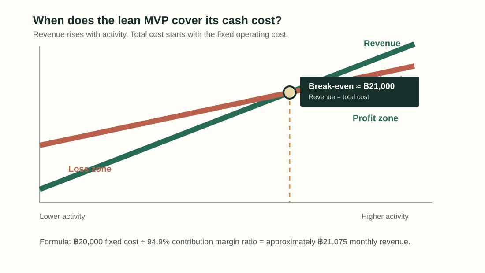

01 / What is DevCraft?
Scroll. Learn.
Build. Grow.
A social learning and career ecosystem for developers.
Post→Question→Course→Challenge→Project→Portfolio→Job
02 / The problem
Developers grow across too many disconnected platforms.
Code ··· Q&A ··· Learning
··· Community ··· Career
The tools exist. The journey is fragmented.
03 / The solution
DevCraft connects the full developer journey.
DevCraftCommunityQuestionsCoursesChallengesProjectsPortfolioJobs
One identity. One community. One connected growth path.
04 / One journey
Social discovery creates activity. Learning creates progress. Projects
create proof.
DiscoverAskLearnPracticeBuildShowApply
05 / Product modules
Six places users move through.
◉
Feed
Discover developer activity.
?
Questions
Get technical help.
▤
Courses
Learn practical skills.
⌁
Challenges
Practice and prove ability.
▣
Portfolio
Show completed work.
↗
Jobs
Find opportunities.
06 / Who uses DevCraft?
DevCraft is a multi-sided platform.
Developerslearn · build · connectCreatorsteach · publish · earnCompanieshire · discover talentPartnerspromote · sponsor
07 / Value exchange
Each group makes the ecosystem more useful for the others.
Developers: activity + projects → DevCraft: discovery +
infrastructure ← Creators / Companies: courses + jobs
08 / Business model
Free activity grows the network. Higher-value activity creates
revenue.
Developers → ProCreators → Pro + commissionCompanies → plans + promoted jobsPartners → affiliate + sponsorship
09 / Pricing logic
Different users pay for different value.
Free
฿0 · communityDeveloper Pro
฿199 · learningCreator Pro
฿299 · earning toolsCompany Starter
฿1,490 · hiringCompany Pro
฿3,990 · advanced hiring
10 / Base-case assumption
5,000 active community users.
4,430Free450Developer Pro · 9%120Creator Pro · 2.4%30Paying companies
Classroom assumption — not actual current usage.
11 / Users become revenue
Paid users × monthly price = subscription revenue.
What?Monthly subscription revenue.
How?Paid customer count × plan price.
Why?It shows exactly where subscription money comes from.
450 × ฿199 = ฿89,550120 × ฿299 = ฿35,88025 × ฿1,490 = ฿37,2505 × ฿3,990 = ฿19,950
12 / Marketplace revenue
DevCraft earns the commission, not the full course sale.
What?Marketplace commission revenue.
How?250 sales × ฿399 = ฿99,750 GMV; DevCraft keeps 20%.
Why?The creator receives 80%, so GMV is not DevCraft revenue.
฿399
250 purchases → GMV ฿99,750
Creator: 80% = ฿79,800
DevCraft: 20% = ฿19,950
13 / Other revenue
Secondary streams support subscriptions.
What?Affiliate, sponsorship, and promoted-job revenue.
How?100 referrals + 1 campaign + 10 promoted jobs.
Why?DevCraft does not rely on one subscription stream.
100 affiliate referrals
฿12,0001 sponsored campaign
฿15,00010 promoted jobs
฿4,900
14 / Total revenue
฿234,480 per month
What?Base-case monthly revenue.
How?Add all subscriptions, commission, affiliate, sponsorship, and
jobs.
Why?This is the starting point before subtracting any cost.
This is the total monthly revenue assumption. Each row below shows one
source and its amount.
Every bar is a separate revenue assumption, added together.
15 / Costs
Fixed costs support the business. Variable costs grow with activity.
Fixed cost
Paid even if one extra user does not join.
Like shop rent.
Variable cost
Grows with payments and platform usage.
Like ingredients per sale.
16 / Lean MVP cash costs
฿20K fixed + ฿12K variable.
What?Minimum monthly MVP cash cost.
How?Fixed costs are ฿20K; usage/transaction costs are ฿12K.
Why?We separate stable overhead from costs that grow with
activity.
Fixed · ฿20,000
Marketing ฿8K · Hosting ฿4K · Contingency ฿4K · Tools ฿2K · Admin
฿2K
Variable · ฿12,000
Payment fees ฿7K · Cloud ฿2.5K · Email/media ฿1.5K · Reserve ฿1K
Founder salaries and full-time staff are not included.
17 / Contribution
Contribution: revenue left after variable cost.
What?Money available to pay fixed cost.
How?฿234,480 revenue − ฿12,000 variable cost = ฿222,480.
Why?Contribution is not profit; fixed cost still must be paid.
This is not profit yet. Contribution first pays fixed operating costs.
฿234,480 − ฿12,000 = ฿222,480
Contribution pays fixed costs first; it is not profit. CMR = 94.9%.
18 / Profit
Operating profit: what remains after all cash costs.
What?Lean MVP cash result for one month.
How?฿222,480 contribution − ฿20,000 fixed cost = ฿202,480.
Why?It shows MVP potential before founder salaries and tax.
Revenue − variable cost − fixed cost. This MVP result is before
founder salaries and tax.
฿234,480Revenue−฿12,000Variable−฿20,000Fixed=฿202,480MVP operating profit*
*Before founder salaries and tax.
19 / Break-even
≈ ฿21,000 monthly revenue covers lean MVP cash cost.
What?The point where there is no loss and no profit.
How?฿20,000 fixed cost ÷ 94.9% contribution margin ratio.
Why?It tells us the minimum revenue needed to survive each
month.

At the intersection, revenue equals total cost. Below it is loss;
above it is operating profit.
฿20,000 fixed cost ÷ 0.949 CMR ≈ ฿21,075.
20 / Scenario analysis
The result changes when user scale changes.
What?Three possible business outcomes.
How?Change user count, paid conversion, revenue, and cost
assumptions.
Why?It proves the base case is an assumption, not a guarantee.
Small caseLower users + conversion may not cover cost.Base case5,000 MAU; positive MVP result.Growth caseMore revenue, and more operating cost.
21 / Marketing funnel
Visibility must become meaningful activity.
AwarenessInterestActivationRetentionMonetization
22 / Competitive position
DevCraft connects areas specialist platforms usually separate.
Learning / building depth ↑
Udemy · Stack Overflow
DevCraft
GitHub · LinkedIn → Career focus
Conceptual positioning illustration — not measured research.
23 / Feasibility
The concept is demonstrable. The business still needs validation.
Technicalbrowser-based platformOperationaldigital; needs managementFinancialmultiple revenue streamsMarketdemand not proven yet
24 / Risk
Adoption and ecosystem quality are the biggest risks.
Monitor
competition · acquisition costHigh attention
low users · weak creators/employersOperational
content · supportCritical
moderation · privacy
25 / Final thesis
Community creates activity.
Learning creates value.
Projects
create proof.
Career creates monetization.
DevCraft — Scroll. Learn. Build. Grow.
Thank you